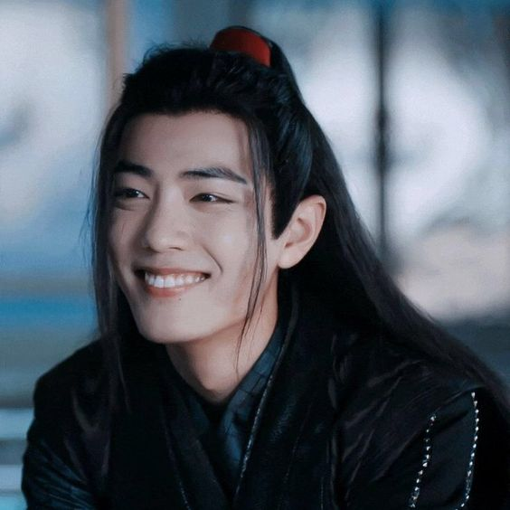
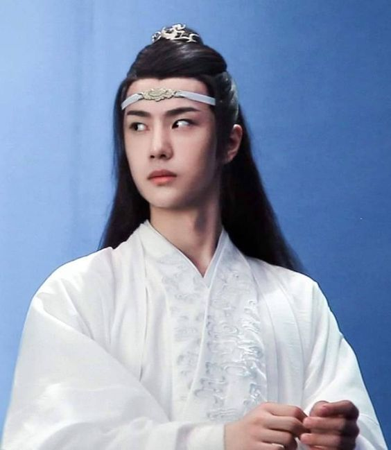
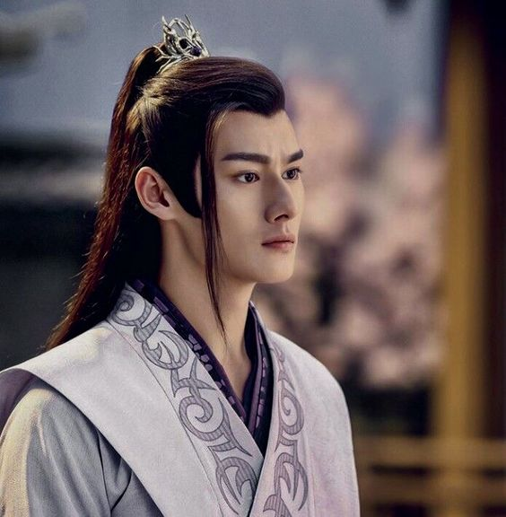
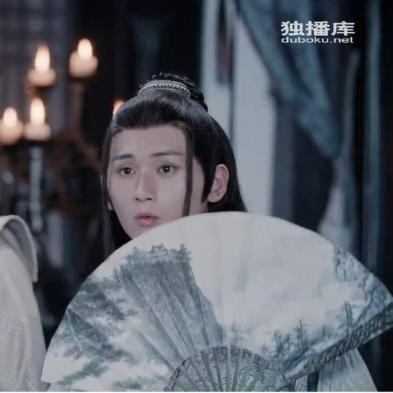
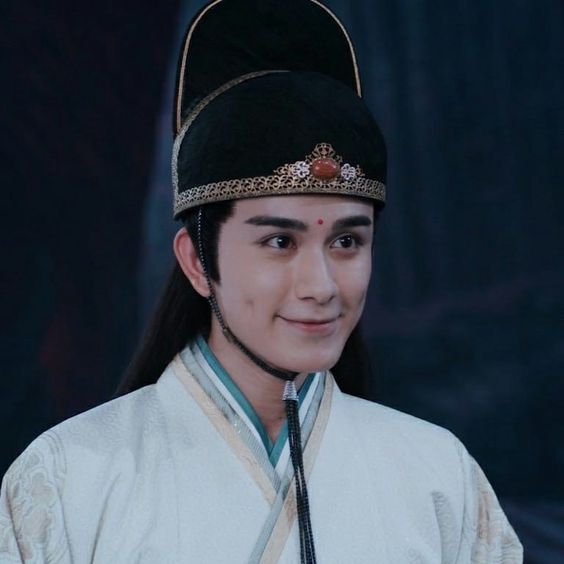
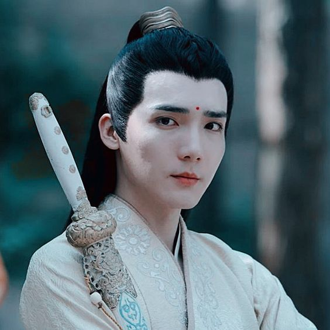
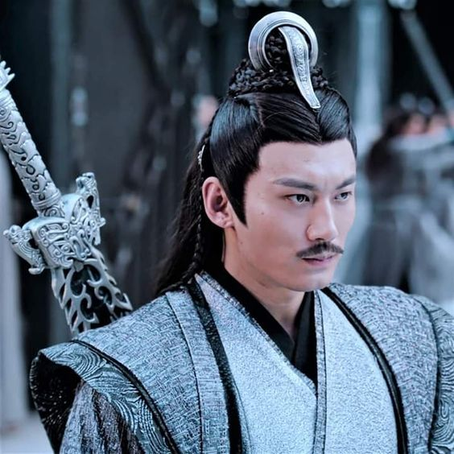
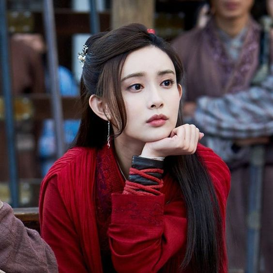
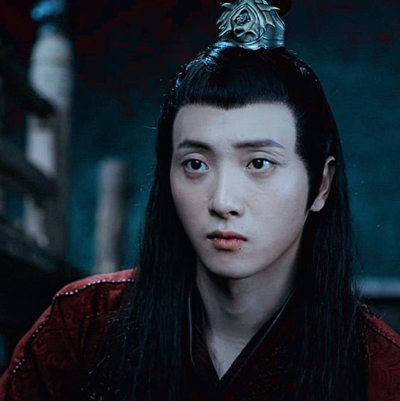
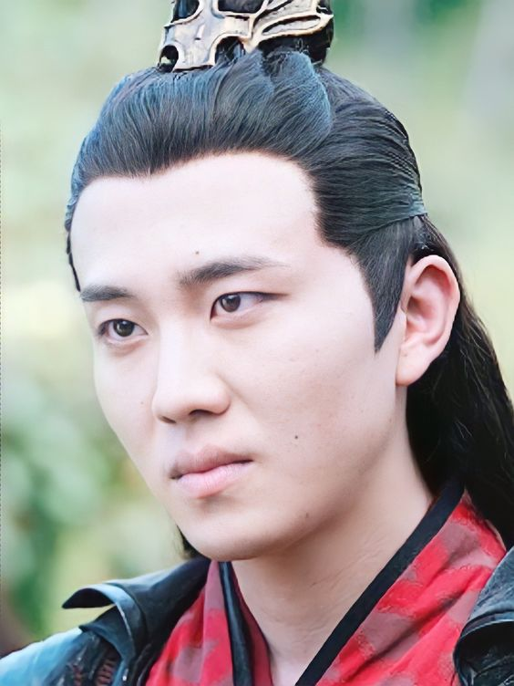

Меня подруга подсадила, теперь я подсаживаю дальше людей. Я мы вирус
Для начала ОЧЕНЬ краткий сюжет: жил был не тужил Вэй Ин. Позитивный парень, в каждой бочке затычка. Но как то вот так вышло,
что он резко стал для всех врагом просто потому что выбрал свой путь (темное, а не светлое и я про начало, а не пиво). Потом он умирает, а через 16 лет по непонятным
причинам воскресает. Магия да и только. И ему нужно найти виновных в совершенных в прошлом преступления.
Ничего не понятно, но очень интересно, поверьте. А сейчас будет краткий экскурс по персонажам (свечку я уже за вас поставила).

Собственно Вэй Ин. Он же Вэй Усянь. Он же Старейшина Илина. Да, эта плюшка - самый главный страх Поднебесной (оклеветали, заразы). Образ, в котором возрадился почти такой же, смысла показывать его нет.
Считает, что вино спасет мир. А если не спасет, сыграет похоронный марш на флейте. Очень любит собак. Примерно так же сильно, как Рон Уизли пауков. Неудержимая шкода, которая лезет везде геройствовать и наводить суету. Особенно в клане Гу Су Лань. Особенно на глазах Лань Чжаня. Напомню - его все боятся, да...

Лань Чжань. Он же Лань Ванцзи. Мистер Покерфейс 2019. Муж Вэй Ина (не спрашивайте, да, это муж). Троп от ненависти до любви их по праву (хотя ненависти там кролик наплакал).

Цзян Чэн. Сучка местного разлива. На самом деле до мозга костей травмированный мамин мальчик, который за своих родных порвет и сам порвется, если надо будет. Люблю всей душой, хоть и ведет себя иногда как... ну, не хорошо себя ведет. Холерик, что поделать?

Не Хуайсан. Будьте осторожны с его именем - можно легко ошибиться и попасть в неловкую ситуацию, мдам, проверено. Ничего не знает. Вообще. Вот прям совсем (читать как "ага, конечно, думайте так и дальше, а я посмотрю хитро на вас из-за веера"). Милашка-кукловод под маской Незнайки на Луне.

Мэн Яо. Второе имя Цзинь Гуанъяо, но мне оно не нравится, поэтому Мэн Яо. Ямочки - запрещенное оружие, кстати говоря. Но не дайте этому солнцу вас одурманить. Хитрый лисенок.

Цзинь Цзысюань. Если вам покажется, что он надменный принц, не думайте так, потому что он милейшее сущейство, которое рад возлюбенной лотосы сажал... сам...

Не М... не помню дальше, да простит меня это мужчина. Сила есть, как говорится, а ум у младшего весь. Но сам по себе интересный персонаж, этакая сборная солянка.

Вэнь Цин. Прекрасная леди. И вылечит, и иголками заколет досмерти. Был намек на гетеро пару с ней, но она слишком горяча для этого...

Вэнь Нин. Прекрасный брат прекрасной леди. Самое милое и невинное существо, которое само по себе никому ничего плохого даже не сделает. Милашка с тяжелой судьбой (у кого она в этой дораме легкая, ладно).

Вэнь Чао... Не могла не вставить эту марозоту редкостную. Если бы раздражитель был человеком, это был бы он. Отвратительный мужик, фу.
Это все очень кратко, но по основной сути. Если будет вдруг инетресно, пишите в тг≽^•⩊•^≼